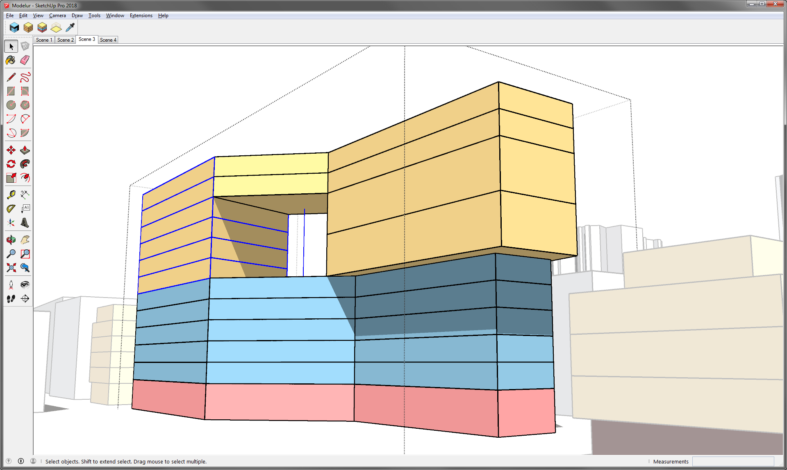
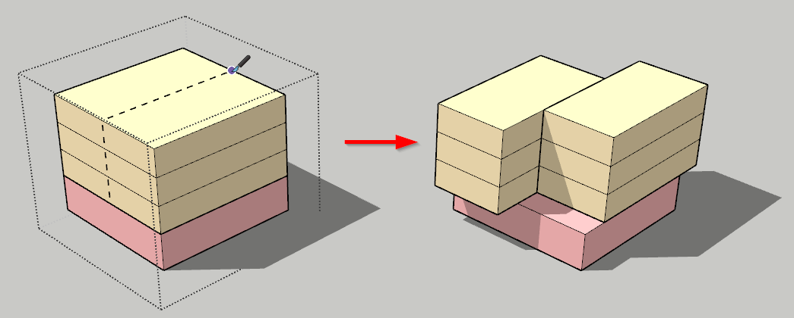

Toolbar
Initialize Modelur¶
Click on this button when you want to start Modelur and open user interface. In order to start Modelur you must be connected to the internet.
Create Building¶
This button will create simple Building (one Land Use type). If a face or a loop is selected, a building will be created based on its shape. If no face or loop is selected, Modelur will create a new Building based on default Building parameters.
Create Complex Building¶
This button will create Complex (Mixed-use) Building.
Complex Building is a group of Buildings (with different Land Use) combined into one Building. You can edit Complex Building as a whole or each part separately. If you want to edit Complex Building as a whole, select the whole Complex Building by clicking on it. It's parameters will be displayed in the Building tab where you can edit them.
If you want to edit only specific parts of a Complex Building, enter the Complex Building as you would any SketchUp Group by double clicking on it first, then select part of the Complex Building by clicking on it once. Parameters of that part will be displayed in the Building tab where you can edit them.

Complex Building Parts ratio
Modelur remembers the original storeys ratio of the Complex Building once you create them. By default it is 1 storey Service and 3 storeys Residential. If you create Complex Building by combining existing simple Buildings, Modelur will remember the ratio based on current state of each Building that will become part of Complex Building.
Let's assume you have created a default Complex Building, which has 1 storey of Service and 3 storeys of Residential area (1S:3R). When, for example, you change this default Complex Building to 5 storeys, Modelur will divide it into 1S:4R, as it is closer to 1S:3R ratio than if it would make it 2S:3R. When you set such Complex Building to 6 storeys, it will divide it into 1S:5R, as it is still closer to 1S:3R than 2S:4R. But when changed to 7 storeys, Modelur will add another Service storey, making the building 2S:5R, which is closer to 1S:3S than 1S:6R.
If you want to change default ratio, simply enter Complex Building (by double clicking on it), set each Building part to desired value. Modelur will remember new parts storeys ratio on each such change.
Create City Block¶
Select a polygon or closed planar edge loop and click on this button to create Modelur City Block. You can edit a City Block in City block tab.
Sync City Block Parameters¶
Synchronize City Block Parameters Tool is used to easily transfer Parameter values from one City Block to another. This Tool is available via Modelur Toolbar (picker icon) or by clicking on the Sync button inside Modelur User Interface → City Block → Selected City Block Parameters. Alternatively, if some City Blocks are already selected, you can activate this tool also via Context Menu Modelur → Sync City Block Parameters.
If City Blocks are already selected, this Tool will apply the Parameters from the picked City Block to all selected City Blocks (marked with yellow dashed outline). If no City Blocks are selected, you first need to pick source City Block (one from which Parameters will be transferred). Source City Block is marked with yellow outline. Then click and hold Ctrl key, which will change the Tool icon from picker to injection. When you click on some other City Block with injection turned on, it will receive the parameters from the source City Block.
When there are some City Blocks in selection while this Tool is active, you can press Esc to deselect them. Note that this will only deselect City Blocks and no other SketchUp Entities in your selection.
Using Sync City Block Parameters you will transfer both, City Block and its Building Parameters, which in turn will also affect all Buildings placed on the City Block to which Parameters are being transferred (according to their Parameters hierarchy).
Split Modelur Building¶
Split Modelur Building Tool is used to divide Modelur Buildings in two parts.
The split is done using 'virtual' vertical plane which you define by clicking
and Edge of a Building (we recommend you start the operation by clicking on one
of the Roof Edges). To complete the operation, click once again on the opposite
side of the Building.
Using Split Tool, you can split both, Simple and Complex Building. When inside Complex Building, you can also use Split Tool to divide it's parts (5.02).
